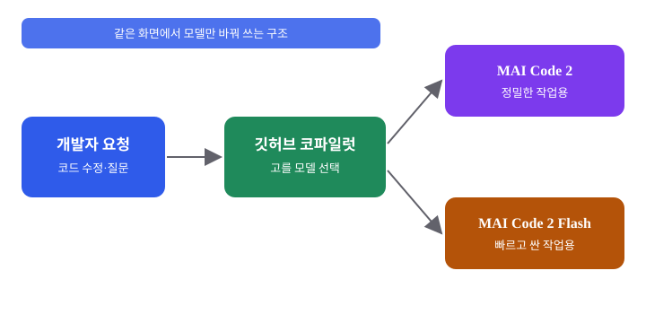
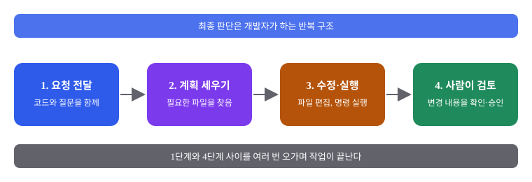

MAI Code 2: 마이크로소프트의 싼 코딩 모델이 깃허브 코파일럿에 들어왔다, 입문 개발자가 알아야 할 것
- 마이크로소프트의 코딩 모델 MAI Code 2와 MAI Code 2 Flash가 11월 17일 깃허브 코파일럿에 정식으로 들어갔습니다.
- 두 모델 모두 최대 100만 토큰을 읽을 수 있다고 소개됐고, 회사 측 측정으로는 상위 모델보다 작업 1건당 비용이 크게 낮습니다.
- 입문 개발자에게 중요한 것은 점수표보다 "작은 일은 싸게, 어려운 일은 비싸게" 나눠 맡기는 습관입니다. 성능 수치는 회사 주장이라 직접 확인이 필요합니다.
이번 주 개발자 커뮤니티에서 가장 많이 나온 이야기는 성능보다 가격이었습니다. 마이크로소프트가 11월 17일 깃허브 코파일럿에 넣은 코딩 모델 MAI Code 2와 MAI Code 2 Flash가 그 중심에 있습니다. 같은 일을 맡기는 데 드는 돈을 크게 낮췄다는 주장이 나오면서 "이제 어떤 모델을 골라야 하나"라는 질문이 많아졌습니다.
01한눈에 보기
MAI Code 2는 마이크로소프트 AI 팀이 만든 코딩 전용 모델입니다. 등급이 두 가지인데, 까다로운 작업을 맡는 MAI Code 2와 빠르고 싼 작업을 맡는 MAI Code 2 Flash입니다. 식당 메뉴에 정식과 간단한 한 그릇이 함께 있는 것과 비슷합니다. 복잡한 요리는 정식으로, 점심 한 끼는 한 그릇으로 고르듯, 함수 이름 바꾸기 같은 간단한 수정은 Flash로, 여러 파일에 걸친 버그는 MAI Code 2로 맡기는 식으로 나눠 쓸 수 있습니다.

컨텍스트 윈도우: 모델이 한 번에 읽을 수 있는 분량입니다. 100만 토큰은 긴 소설 여러 권을 한꺼번에 읽는 정도의 양이라고 보면 됩니다.
에이전트 작업: 사람이 한 줄씩 지시하지 않아도 모델이 계획을 세우고, 파일을 고치고, 명령을 실행하는 과정을 여러 번 반복하는 방식입니다.
02어떻게 동작하나요
개발자가 VS Code나 깃허브 웹에서 코파일럿에 요청을 보내면, 코파일럿이 어떤 모델을 쓸지 정합니다. 선택된 모델은 열린 파일과 프로젝트 맥락을 읽고 수정 계획을 세웁니다. 그다음 파일을 고치거나 터미널 명령을 실행하고, 결과를 보고 다시 고칩니다. 마지막 승인은 사람이 합니다. 발표 자료는 두 모델이 이런 에이전트 작업, 즉 계획과 수정을 여러 번 오가는 작업에 맞춰졌다고 설명합니다.

여기서 입문자가 기억할 점은 모델이 저장소를 직접 바꾸는 것이 아니라 코파일럿이 열어 준 도구를 통해 바꾼다는 것입니다. 그래서 변경된 내용을 눈으로 확인하는 단계를 건너뛰면 안 됩니다. 자동으로 고쳐진 코드도 결국 내 프로젝트의 책임입니다.
03왜 지금 화제인가요
마이크로소프트는 11월 17일 Ignite 2026 행사에서 두 모델을 발표했고, 같은 날 깃허브 코파일럿에 넣었습니다. 발표 뒤 이틀 사이 기사와 개발자 블로그들이 가격 비교를 앞다퉈 다뤘습니다. 회사 측 주장에 따르면 MAI Code 2는 GPT-6.1 Sol 성능의 98%를 40% 비용으로, Claude Opus 5.5 성능의 96%를 5% 비용으로 낸다고 합니다. 이 수치는 회사가 측정한 것입니다.
04관련 나라·기업
| 구분 | 이름 | 어떤 관련이 있나 |
|---|---|---|
| 기업 | Microsoft | 두 모델을 만든 회사입니다. Microsoft AI 팀이 개발했다고 소개됐습니다. |
| 기업 | GitHub | 두 모델을 깃허브 코파일럿에 넣고 구독 등급별 사용 범위와 과금 방식을 정했습니다. |
| 기업 | OpenAI | 비교 대상으로 쓰인 GPT-6.1 Sol과 GPT-6 Luna를 만든 회사입니다. |
| 기업 | Anthropic | 비교 대상으로 쓰인 Claude Opus 5.5와 Haiku 5.5를 만든 회사입니다. |
| 나라 | 미국 | 위 네 회사가 모두 미국 기업입니다. |
05기존 방식과 무엇이 다른가
아래 비용은 발표 자료 기준 작업 1건당 평균입니다. 모델 사용료가 아니라 "한 가지 일을 끝내는 데 드는 돈"으로 비교해야 공정합니다.
| 비교 항목 | 상위 모델 (GPT-6.1 Sol · Opus 5.5) | MAI Code 2 | MAI Code 2 Flash |
|---|---|---|---|
| 작업 1건 평균 비용 | $0.761 · $6.306 | $0.309 (할인가) | $0.052 (할인가) |
| 입력·출력 요금 (100만 토큰당, 할인 기간) | 출처에서 확인하지 못함 | $0.50 · $2.50 | $0.05 · $0.25 |
| 입력·출력 요금 (할인 종료 후) | 출처에서 확인하지 못함 | $1.00 · $5.00 | $0.10 · $0.50 |
| 컨텍스트 길이 | 확인하지 못함 | 100만 토큰 | 100만 토큰 |
할인 기간은 2027년 5월 17일까지입니다. 그 뒤에는 요금이 두 배가 되므로, 비용을 따질 때는 할인 가격과 정상 가격을 함께 보는 습관이 필요합니다.
06직접 해 보기
지금 바로 해 볼 수 있는 일은 코드를 바꾸지 않고 두 가지를 확인하는 것입니다. 첫째, 깃허브 코파일럿 설정 화면에서 내 구독 등급으로 두 모델이 보이는지 확인하세요. 둘째, 같은 작은 작업, 예를 들어 함수 하나에 주석 달기나 변수 이름 바꾸기를 Flash와 다른 모델에 각각 맡겨 보고, 결과와 걸린 시간을 메모하세요. 메뉴 위치는 버전마다 다를 수 있으니 깃허브 공식 문서의 안내를 따르세요. 이 메모가 쌓이면 "어떤 일은 싼 모델로 충분하다"는 감을 직접 얻게 됩니다.
07주의할 점과 한계
- 성능 수치는 마이크로소프트가 낸 측정값입니다. 최대 추론 설정, 회사 내부 평가 환경(Copilot CLI, 서브에이전트 없이 실행)에서 나온 값이라 내 프로젝트에 그대로 옮길 수는 없습니다.
- 할인 가격은 2027년 5월 17일까지입니다. 그 뒤에는 요금이 두 배가 됩니다.
- 무료·학생 플랜에서 Flash를 쓸 수 있는지는 자료마다 다르게 적혀 있습니다. 내 계정 화면에서 직접 확인해야 합니다.
- 회사 설명으로는 과학 연구나 아주 긴 시간 동안 스스로 움직이는 작업에는 아직 맞춰져 있지 않다고 합니다.
- 모델이 새 버전으로 바뀌면 같은 요청에도 결과가 달라질 수 있습니다.
- 모델 카드에서 공격적 보안 작업 능력이 높게 평가됐다는 내용이 있습니다. 회사의 보안 정책과 사용 규칙을 먼저 확인하세요.
08정리
MAI Code 2는 "가장 똑똑한 모델"보다 "충분히 잘하는 모델을 싸게"라는 방향을 분명히 한 모델입니다. 입문 개발자에게 이 소식의 교훈은 모델을 고를 때 점수표만 보지 말고, 작업 1건당 비용과 맡길 일의 크기를 같이 보라는 것입니다. 장바구니를 고를 때 가격과 용량을 함께 보는 것과 같은 원리입니다.
작은 수정은 Flash, 어려운 버그는 상위 모델처럼 나눠 쓰는 습관을 들이면 비용을 줄이면서도 결과의 품질을 지킬 수 있습니다. 모델이 아무리 바뀌어도 변경된 코드를 사람이 검토하는 원칙만은 그대로 지키세요.
09참고한 글
- MAI Code 2 and MAI Code 2 Flash in GitHub Copilot GitHub Changelog (공식) · 2026.11.17
- Microsoft launches MAI Code 2 models to challenge OpenAI and Anthropic in AI coding InfoWorld · 2026.11.18
- MAI Code 2·Code 2 Flash 공개 - 벤치마크 수치의 조건과 도입 판단 기준 braindetox · 2026.11.18
- Microsoft's MAI Code 2 Is Live in GitHub Copilot — the Pitch Is Price, Not Just Power DEV Community · 2026.11.18
- Microsoft's new AI coder is gunning for Claude and ChatGPT Digital Trends · 2026.11.19